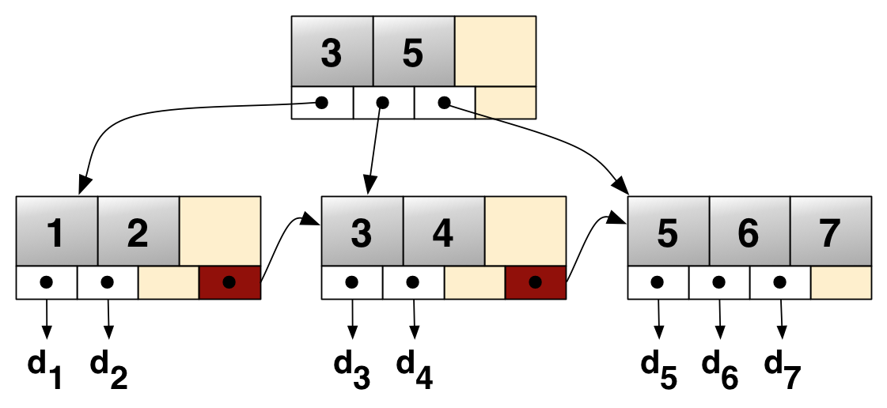

Índices
Na página anterior, exploramos como utilizar o TPC-B para avaliar a performance de sistemas de banco de dados. Agora, vamos nos aprofundar em uma das técnicas mais poderosas para otimização de consultas: os índices.
Imagine que você precise localizar uma informação específica em um livro de 500 páginas. Você poderia ler página por página até encontrar o que procura, mas isso seria extremamente ineficiente. Em vez disso, você provavelmente consultaria o índice remissivo, que lista os tópicos em ordem alfabética com os números das páginas onde aparecem. Esta é exatamente a função de um índice em um banco de dados: fornecer um caminho rápido e eficiente para localizar dados sem precisar varrer toda a tabela.
Importante!
Um índice é uma estrutura de dados adicional que o banco de dados mantém separadamente da tabela principal.
Ele organiza os dados de uma forma que permite buscas mais rápidas, mas ao custo de espaço extra em disco e tempo adicional nas operações de escrita.
Quando executamos uma consulta sem índices apropriados, o banco de dados precisa realizar uma varredura completa da tabela (full table scan), lendo cada linha sequencialmente até encontrar os dados desejados.
Para tabelas pequenas com algumas centenas ou milhares de registros, isso pode ser aceitável. Porém, quando lidamos com milhões ou bilhões de linhas, essa abordagem se torna proibitivamente lenta.
Entendendo o Plano de Execução
Antes de explorarmos os diferentes tipos de índices disponíveis no PostgreSQL, precisamos entender como funciona a execução de consultas. Mas por que isto é necessário?
Exercício
Answer
SQL (Structured Query Language) é uma linguagem declarativa. Isso significa que, ao escrever uma consulta SQL, você descreve o que deseja obter (os dados que quer), sem especificar como o banco de dados deve realizar essa tarefa.
O otimizador de consultas do banco de dados é responsável por determinar o melhor plano de execução para atender à consulta, escolhendo os métodos mais eficientes para acessar e processar os dados.
O comando que nos permite isso é o EXPLAIN.
Definição: EXPLAIN
O comando EXPLAIN mostra o plano de execução que o otimizador de consultas do PostgreSQL escolheu para uma determinada instrução SQL.
Ele revela como o banco de dados pretende acessar as tabelas e quais índices serão utilizados, e a ordem das operações.
Quando adicionamos a opção ANALYZE, o PostgreSQL não apenas mostra o plano, mas realmente executa a consulta e apresenta estatísticas de tempo e recursos consumidos.
Já a opção BUFFERS fornece informações adicionais sobre o uso de memória e acesso a disco durante a execução.
Exercise
Answer
Entender o plano de execução revela exatamente como o banco de dados está processando nossa consulta.
Sem essa informação, estaríamos atirando no escuro ao tentar otimizações.
O plano nos mostra se há varreduras completas de tabela quando deveríamos usar índices, se as junções estão sendo feitas de forma eficiente, e onde estão os gargalos reais de performance.
Analisar!
É a diferença entre resolver o problema real versus tentar soluções aleatórias!
Quando executamos o comando EXPLAIN ANALYZE, o PostgreSQL nos retorna uma árvore de operações, onde cada nó representa uma etapa no processamento da consulta. As informações mais importantes incluem o tipo de operação (Seq Scan, Index Scan, Hash Join, etc.), o custo estimado, o tempo real de execução, e o número de linhas processadas.
Exercício
O resultado que você verá terá uma estrutura semelhante a esta (os valores podem variar):
Index Scan using trip_pkey on trip (cost=0.42..8.44 rows=1 width=51) (actual time=0.016..0.017 rows=0 loops=1)
Index Cond: (id = 500000)
Buffers: shared hit=3
Planning Time: 0.047 ms
Execution Time: 0.035 ms
No resultado, o Index Scan indica que o PostgreSQL está usando um índice para localizar a linha com o ID correspondente, em vez de fazer uma varredura sequencial completa. O campo cost mostra valores estimados: o primeiro número (0.42) é o custo de inicialização, e o segundo (8.44) é o custo total estimado. Os números em actual time mostram o tempo real em milissegundos.
Exercise
Answer
Provavelmente você verá um comportamento de varredura sequencial. A coluna start_station_id não possui índice por padrão, então mesmo que estejamos buscando por um valor específico, o banco ainda precisa varrer toda a tabela.
Isso resulta em um tempo de execução significativamente maior, especialmente se a tabela for grande. A ausência de um índice adequado para essa coluna força o banco a realizar uma operação menos eficiente.
Dica
Um Seq Scan com muitas linhas em Rows Removed by Filter significa que o banco de dados leu todas as linhas da tabela, mas descartou uma boa parte delas porque não satisfaziam a condição da busca.
Isto indica que há espaço para otimização!
Índice B-Tree
O tipo de índice mais comum e versátil no PostgreSQL é o B-Tree. Este é o tipo padrão quando criamos um índice sem especificar o tipo explicitamente. Para entender por que os índices B-Tree são tão eficazes, precisamos compreender sua estrutura interna.

Uma árvore B-Tree organiza os dados em uma hierarquia de nós, onde cada nó pode conter múltiplas chaves e ponteiros para nós filhos. A cada alteração nos dados, a árvore permanece balanceada, garantindo que o caminho da raiz até qualquer folha tenha aproximadamente o mesmo comprimento. Isso significa que o tempo de busca é consistente e proporcional ao logaritmo do número de elementos, não ao número total de elementos.
Imagine que temos uma tabela com milhões de registros e criamos um índice B-Tree na coluna de ID. A raiz da árvore contém alguns valores-chave que dividem o espaço de busca em intervalos. Por exemplo, poderia conter os valores [100000, 300000, 500000]. Se buscamos o ID = 400000, o banco sabe imediatamente que deve seguir pelo ponteiro entre 300000 e 500000, ignorando completamente as outras ramificações da árvore.
Cada nível subsequente da árvore refina ainda mais a busca. Um nó interno poderia subdividir o intervalo 300000-500000 em [320000, 350000, 400000, 450000], e assim por diante.
Nas folhas da árvore, finalmente encontramos ponteiros diretos para as linhas da tabela onde os dados estão armazenados.
Complexidade de Busca
A grande vantagem do B-Tree é sua complexidade logarítmica. Para uma tabela com 1 milhão de linhas, uma busca sem índice requer examinar até 1 milhão de linhas.
Com um índice B-Tree de altura 4, você precisa percorrer apenas 4 nós para encontrar qualquer valor. Isso representa uma redução de 1.000.000 operações para aproximadamente 4 operações.
Os índices B-Tree são muito versáteis e suportam comparações de igualdade (=), desigualdade (<, >, <=, >=), e verificações de intervalo (BETWEEN).
Também suportam operações de padrão como LIKE quando o padrão está ancorado no início da string (LIKE 'abc%'), mas não quando o curinga está no início (LIKE '%abc').
Exercise
Answer
Os índices B-Tree organizam os dados em ordem lexicográfica (alfabética).
Quando buscamos por LIKE 'abc%', sabemos que todas as strings que correspondem começam com "abc", então podemos navegar diretamente para a seção da árvore onde essas strings estão armazenadas.
Porém, quando o padrão é LIKE '%abc', as strings que terminam com "abc" estão espalhadas por toda a árvore (pois "xabc", "yabc", "zabc" estão em locais completamente diferentes), forçando uma varredura completa do índice, o que não é mais eficiente que varrer a tabela.
Outros Tipos de Índices
Embora o B-Tree seja o tipo mais comum, o PostgreSQL oferece diversos outros tipos de índices, cada um otimizado para casos de uso específicos. A escolha do tipo correto de índice pode fazer a diferença entre uma consulta que leva segundos e uma que leva milissegundos.
Hash
Os índices Hash são otimizados exclusivamente para comparações de igualdade usando o operador =. Eles funcionam aplicando uma função hash ao valor da coluna, que mapeia o valor para um bucket específico onde o dado pode ser rapidamente localizado.
A principal vantagem dos índices Hash sobre B-Tree é que, em teoria, podem ser ligeiramente mais rápidos para buscas de igualdade pura, pois realizam uma operação de hash e acesso direto ao bucket. No entanto, eles têm limitações significativas: não suportam comparações de desigualdade, não podem ser usados para ordenação, e não podem ser utilizados em buscas de intervalo.
Quando usar Hash
O uso de índices Hash pode ser recomendado (em teoria) quando você tem consultas que fazem apenas comparações de igualdade e nunca precisam de ordenação ou comparações de intervalo. Na prática, com as melhorias modernas do PostgreSQL, os índices B-Tree geralmente são suficientemente rápidos mesmo para igualdades, então Hash é usado mais raramente.
GIN (Generalized Inverted Index)
Os índices GIN são especializados em indexar valores compostos que contêm múltiplos elementos, como arrays, documentos JSON, e campos de texto completo. A estrutura invertida significa que o índice mapeia elementos individuais de volta para as linhas que os contêm.
Por exemplo, se você tem uma coluna com arrays de tags, um índice GIN permitiria buscar eficientemente todas as linhas que contêm uma tag específica, mesmo que cada linha contenha múltiplas tags. Isso seria extremamente ineficiente com um índice B-Tree tradicional, pois você teria que comparar arrays inteiros.
Os índices GIN são particularmente úteis para busca de texto completo. Quando você indexa uma coluna de texto com GIN usando a configuração apropriada de busca textual, ele cria um índice invertido que mapeia cada palavra única de volta para os documentos que a contêm, similar ao funcionamento de motores de busca como o Google.
Caso de Uso GIN
Imagine uma tabela de artigos científicos com uma coluna tags do tipo array. Com um índice GIN, você pode buscar eficientemente todos os artigos que contêm a tag "machine learning", mesmo que cada artigo tenha dezenas de tags diferentes. A consulta WHERE 'machine learning' = ANY(tags) seria extremamente rápida.
BRIN (Block Range Index)
Os índices BRIN representam uma abordagem diferente dos outros tipos de índices. Em vez de indexar cada valor individualmente, eles armazenam estatísticas resumidas sobre intervalos de blocos físicos na tabela. Isso os torna extremamente compactos, ocupando apenas uma fração do espaço que um índice B-Tree ocuparia.
A ideia central é que, para dados que têm correlação natural com a ordem física de armazenamento (por exemplo, dados com timestamp que são inseridos cronologicamente), você não precisa de um índice completo. Você apenas precisa saber que o bloco 1 contém valores entre janeiro e fevereiro, o bloco 2 contém valores entre fevereiro e março, e assim por diante.
Quando usar BRIN
BRIN é ideal para tabelas muito grandes com dados que têm correlação física, como logs de sistema ordenados por timestamp ou dados de séries temporais. O índice pode ser centenas de vezes menor que um B-Tree equivalente, tornando-o extremamente eficiente em termos de espaço e manutenção, embora menos preciso nas buscas.
O Custo dos Índices
Até agora, focamos nos benefícios dos índices, mas é crucial entender que eles não são uma solução sem custos. Cada índice que criamos representa um compromisso entre velocidade de leitura e velocidade de escrita, entre performance de consulta e uso de espaço em disco.
Quando inserimos uma nova linha em uma tabela, o banco de dados não apenas escreve a linha na tabela principal, mas também precisa atualizar todos os índices que existem naquela tabela. Se você tem cinco índices em uma tabela, cada inserção requer seis operações de escrita: uma para a tabela e cinco para os índices. Isso pode impactar significativamente a performance de sistemas que realizam muitas escritas.
O mesmo vale para operações de atualização. Quando você modifica o valor de uma coluna indexada, o banco de dados precisa não apenas atualizar a linha na tabela, mas também ajustar o índice para refletir o novo valor. Para índices B-Tree, isso pode envolver reorganizar nós da árvore para manter o balanceamento, uma operação potencialmente custosa.
Além do impacto em escritas, índices consomem espaço significativo em disco. Dependendo das colunas indexadas e do tipo de índice, um índice pode ocupar tanto espaço quanto a própria tabela, ou até mais. Em sistemas com dezenas de terabytes de dados, o espaço ocupado por índices pode representar um custo financeiro substancial em infraestrutura de armazenamento.
Princípio de Otimização
Não crie índices indiscriminadamente.
Cada índice deve justificar sua existência através de um ganho mensurável de performance em consultas frequentes e importantes. Índices que nunca são usados são puro desperdício de recursos.
Existe também o fenômeno da fragmentação de índices. Com o tempo, à medida que dados são inseridos, atualizados e deletados, a estrutura interna do índice pode se tornar fragmentada, com nós parcialmente vazios e páginas de dados espalhadas fisicamente no disco. Isso degrada a performance gradualmente, tornando necessária uma manutenção periódica através de operações como REINDEX ou VACUUM.
Exercise
Answer
Este é um caso clássico onde índices tradicionais podem ser não ideais.
Algumas estratégias possíveis incluem: usar poucos índices ou apenas BRIN (que têm custo de manutenção muito baixo), considerar particionamento da tabela por período de tempo (permitindo indexar apenas partições antigas enquanto mantém partições recentes sem índices para inserção rápida), ou implementar um padrão de ETL onde os dados são inicialmente escritos em uma tabela de staging sem índices e periodicamente movidos para uma tabela otimizada para consultas com índices apropriados.
Quando Usar Cada Tipo de Índice
A escolha do tipo correto de índice requer compreender não apenas as características técnicas de cada tipo, mas também os padrões de acesso aos dados em sua aplicação. Não existe uma resposta universal, mas podemos estabelecer diretrizes gerais baseadas em cenários comuns.
Para colunas que são frequentemente usadas em condições WHERE com comparações de igualdade, desigualdade, ou intervalos, o B-Tree é quase sempre a escolha correta.
Importante!
Use B-Tree quando você precisa suportar ordenação, quando suas consultas envolvem comparações variadas, ou quando você simplesmente não tem certeza de qual tipo usar.
O Hash deve ser reservado para situações muito específicas onde você tem consultas que fazem apenas comparações de igualdade, nunca ordenação, e você identificou através de benchmarks que ele oferece vantagem mensurável sobre B-Tree. Na prática, essas situações são raras.
Hash!
Um cenário típico para índices Hash envolve colunas que armazenam identifadores longos, em formato de string (como URLs), onde as consultas são exclusivamente para encontrar registros com um valor exato.
Use GIN quando você está indexando dados compostos: arrays, documentos JSON, campos de texto completo, ou qualquer situação onde você precisa buscar por elementos dentro de estruturas maiores. GIN é a escolha natural para implementar funcionalidades de busca textual ou quando você tem dados semi-estruturados que precisam ser consultados de formas flexíveis.
BRIN brilha em tabelas muito grandes (vários gigabytes, dezenas, centenas) onde os dados têm correlação natural com sua ordem de armazenamento físico. Pense em logs com timestamps, dados de séries temporais, ou qualquer dado que cresce monotonicamente.
BRIN!
O tamanho reduzido do índice BRIN é particularmente valioso em ambientes com restrições de memória ou onde o custo de manutenção de índices tradicionais é proibitivo.
Exercise
Answer
-
B-Tree - Embora seja principalmente busca de igualdade, B-Tree é perfeitamente eficiente para isso e oferece flexibilidade caso você precise de outras operações no futuro (como buscas por domínio com LIKE 'email@domain%').
-
GIN - Ideal para busca de texto completo. Você criaria um índice GIN na coluna usando a configuração de busca textual apropriada, permitindo buscas eficientes por palavras ou frases.
-
BRIN - A tabela é enorme e os dados têm correlação temporal forte. Um índice BRIN seria centenas de vezes menor que um B-Tree e perfeitamente adequado para consultas de intervalo de tempo.
Na próxima seção, vamos trabalhar com nosso banco de dados sfbikeshare para criar índices. Siga para a próxima página!